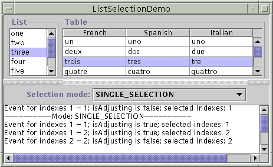

List selection events occur when the selection in a list or table is either changing or has just changed. List selection events are fired from an object that implements theListSelectionModelinterface. To get a table's list selection model object, you can use eithergetSelectionModelmethod or getColumnModel().getSelectionModel().To detect list selection events, you register a listener on the appropriate list selection model object. The
JListclass also gives you the option of registering a listener on the list itself, rather than directly on the list selection model.This section looks at two examples that show how to listen to list selection events on a selection model. Examples that Use List Selection Listeners lists examples that listen on the list directly.
In these two examples, you can dynamically change the selection mode to any of the three supported modes:
- single selection mode
- single interval selection mode
- multiple interval selection mode
Here is a picture of ListSelectionDemo example running in a List :

Here is a picture of TableListSelectionDemo example running in a Table:
Try this:
- Click the Launch button to run ListSelectionDemo using Java™ Web Start (download JDK 6). Alternatively, to compile and run the example yourself, consult the example index.

- Select and deselect items in the list. The mouse and keyboard commands required to select items depends on the look and feel. For the Java look and feel, click the left mouse button to begin a selection, use the shift key to extend a selection contiguously, and use the control key to extend a selection discontiguously. Note that there are two types of selections: Lead and Anchor. Lead is the focused item and Anchor is the highlighted item. When you press ctrl key and move up and down, the lead selection causes the events being fired even though the actual selection has not changed. Dragging the mouse moves or extends the selection, depending on the list selection mode.
You can find the entire program of ListSelectionDemo in
Try this:
- Click the Launch button to run TableListSelectionDemo using Java™ Web Start (download JDK 6). Alternatively, to compile and run the example yourself, consult the example index.
- Select and deselect items in the table. The mouse and keyboard commands required to select items depends on the look and feel. For the Java look and feel, click the left mouse button to begin a selection, use the shift key to extend a selection contiguously, and use the control key to extend a selection discontiguously. Note that there are two types of selections: Lead and Anchor. Lead is the focused item and Anchor is the highlighted item. When you press ctrl key and move up or down, the lead selection causes the events being fired even though the actual selection has not changed. Dragging the mouse moves or extends the selection, depending on the list selection mode.
and the entire program of TableListSelectionDemo inListSelectionDemo.java.TableListSelectionDemo.javaHere is the code from
ListSelectionDemothat sets up the selection model and adds a listener to it:And here is the code for the listener, which works for all the possible selection modes:...//where the member variables are defined JList list; ...//in the init method: listSelectionModel = list.getSelectionModel(); listSelectionModel.addListSelectionListener( new SharedListSelectionHandler()); ...Thisclass SharedListSelectionHandler implements ListSelectionListener { public void valueChanged(ListSelectionEvent e) { ListSelectionModel lsm = (ListSelectionModel)e.getSource(); int firstIndex = e.getFirstIndex(); int lastIndex = e.getLastIndex(); boolean isAdjusting = e.getValueIsAdjusting(); output.append("Event for indexes " + firstIndex + " - " + lastIndex + "; isAdjusting is " + isAdjusting + "; selected indexes:"); if (lsm.isSelectionEmpty()) { output.append(" <none>"); } else { // Find out which indexes are selected. int minIndex = lsm.getMinSelectionIndex(); int maxIndex = lsm.getMaxSelectionIndex(); for (int i = minIndex; i <= maxIndex; i++) { if (lsm.isSelectedIndex(i)) { output.append(" " + i); } } } output.append(newline); } }valueChangedmethod displays the first and last indices reported by the event, the value of the event'sisAdjustingflag, and the indices currently selected.Note that the first and last indices reported by the event indicate the inclusive range of items for which the selection has changed. If the selection mode is multiple interval selection some items within the range might not have changed. The
isAdjustingflag istrueif the user is still manipulating the selection, andfalseif the user has finished changing the selection.The
ListSelectionEventobject passed intovalueChangedindicates only that the selection has changed. The event contains no information about the current selection. So, this method queries the selection model to figure out the current selection.

The List Selection Listener API
The ListSelectionListener Interface
Because
ListSelectionListenerhas only one method, it has no corresponding adapter class.
Method Purpose valueChanged(ListSelectionEvent) Called in response to selection changes.
Method Purpose Object getSource()
(injava.util.EventObject)Return the object that fired the event. If you register a list selection listener on a list directly, then the source for each event is the list. Otherwise, the source is the selection model. int getFirstIndex() Return the index of the first item whose selection value has changed. Note that for multiple interval selection, the first and last items are guaranteed to have changed but items between them might not have. However, when you press ctrl key and move up or down, the lead selection causes the events being fired even though the actual selection has not changed. int getLastIndex() Return the index of the last item whose selection value has changed. Note that for multiple interval selection, the first and last items are guaranteed to have changed but items between them might not have. However, when you press ctrl key and move up and down, the lead selection causes the events being fired even though the actual selection has not changed. boolean getValueIsAdjusting() Return trueif the selection is still changing. Many list selection listeners are interested only in the final state of the selection and can ignore list selection events when this method returnstrue.
Examples that Use List Selection Listeners
The following table lists the examples that use list selection listeners.
Example Where Described Notes ListSelectionDemoThis section Reports all list selection events that occur on a list. Lets the user dynamically change the selection mode. TableListSelectionDemoThis section Reports all list selection events that occur on a table. Lets the user dynamically change the selection mode. ListDemoHow to Use Lists Listens to events on a single-selection list (not on its selection model). Enables and disables a button depending on whether any items are selected in the list. SplitPaneDemoHow to Use Lists Listens to events on a single-selection list (not on its selection model). SimpleTableSelectionDemoHow to Use Tables Uses two different list selection listeners on one table. One listener listens to list selection events on table columns, the other listens to list selection events on table rows.